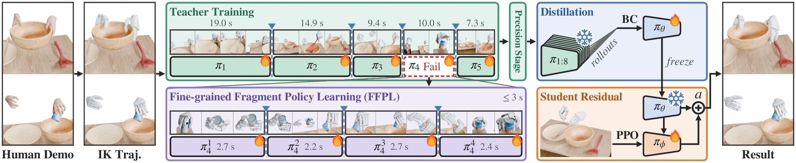
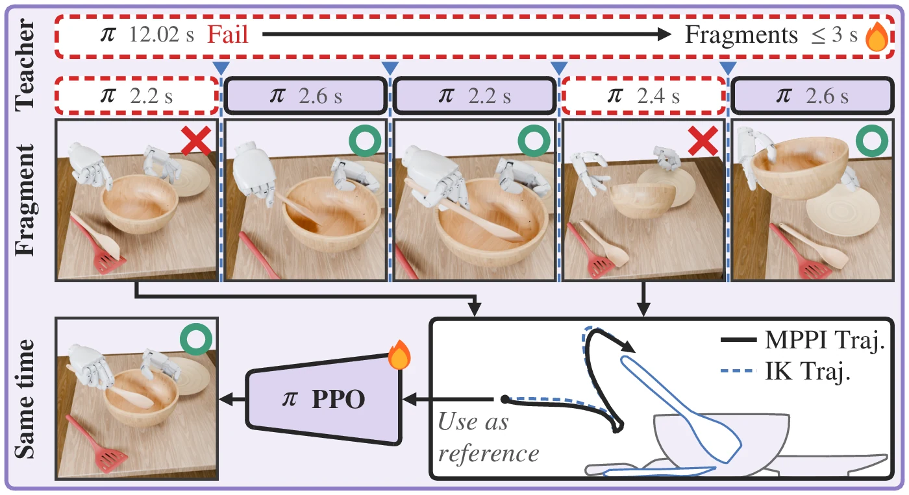

LongDex turns one minute-long, multi-object human demonstration into one dexterous bimanual robot policy by learning the skills on short segments and the transitions with a residual policy. On 20 one-minute clips from HOT3D and OakInk2, it succeeds in 62.3 % of the rollouts, about three times as often as the best prior method.
01Overview
SR is the share of rollouts in which every object stays within 3 cm and 30° of its reference on average over the clip, and a clip counts as completed when at least 32 of its 256 rollouts succeed on average over two training seeds. The success rate, its ratio to the best prior method and the completed clips above are all measured with the XHand.
Abstract
Dexterous hand policies can track short human demonstrations in physics simulation, but they struggle with minute-long ones that involve several objects. A single policy must learn every contact-rich skill of such a clip at once, and its errors build up as the clip goes on. Policies trained on short pieces, in contrast, learn the skills more easily but fail at the transitions when chained. We therefore present LongDex, which learns one policy per demonstration by learning the skills and the transitions separately.
For the skills, we cut the clip where neither hand touches an object and train a teacher policy on each segment. When a teacher fails on its segment, fine-grained fragment policy learning (FFPL) splits the segment into shorter fragments, and if a fragment still fails, it re-plans only the hand path with sampling-based model predictive control while the object reference stays fixed. For the transitions, we distill all teachers into a single student and train a residual policy with reinforcement learning on the states that the resulting policy itself reaches, so that the residual learns the transitions that no teacher has seen. On 20 one-minute clips from HOT3D and OakInk2 moving up to seven objects, LongDex reaches a success rate of 62.3 %, about three times that of the best prior method, whereas chaining the same teachers fails.
02Method
Learn the skills and the transitions separately. Teachers learn the skills on short segments of the clip, FFPL repairs the teachers that fail, and a residual policy on a student distilled from all teachers learns the transitions over the whole clip.

Scroll sideways · Open full size

Teachers on segments
We cut the clip where neither hand touches an object and train one PPO teacher on each segment.
FFPL with hand-path re-planning
A failing segment is split into fragments of at most 3 s, and a fragment that still fails gets its hand path re-planned with MPPI while the object reference stays fixed.
Student plus residual
All teachers are distilled into one frozen student, and a residual policy trained with PPO over the whole clip learns to cross the hand-overs between teachers.

03Side by side
The viewer plays the human demonstration and the rollouts of SPIDER, CHORD and LongDex in sync at 2× speed on 13 clips that LongDex completes with the XHand, so the same moment can be compared across methods. A red dashed frame marks a rollout from the moment it fails SR, which LongDex passes on every clip shown, SPIDER on six and CHORD on one.
Human Demo
Reference
Shows the recorded human hand and object motion that every method is asked to reproduce in simulation.
SPIDER
Sampling-based MPC · XHand
Plans again from the current state at every step, so after a loss its hands keep following the reference, and it is scored on one planned trajectory per clip and seed.
CHORD
Single learned policy · Sharpa Wave
Runs with its authors' code, simulator and robot hand as one policy for the whole clip, retrained here with multi-point contact and recorded with contact settings that reduce the trembling of resting objects, and its errors build up as the clip goes on.
LongDex
Ours · XHand
Learns one policy for the whole clip (a residual on a frozen student) and on this clip keeps every object on track to the end.
Side-by-Side Comparison on One Clip. The human demonstration and the rollouts of SPIDER, CHORD and LongDex play in sync, and LongDex tracks the clip to the end.
04Citation
@misc{kim2026longdex,
title = {LongDex: Learning Multi-Object Bimanual Dexterous Manipulation from Long-Horizon Human Demonstrations},
author = {Kim, Jeonghwan and Lan, Yushi and Wang, Yanrong and Chen, Yongwei and Pan, Xingang},
year = {2026}
}